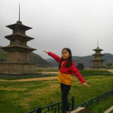

한국 건축 미술 둘러보기
1.1 선사시대 (기원전 ???)
 |
|
|
|
|---|---|---|---|
| 고인돌 강화도 |
고인돌 고창 등 |
반구대 암각화 울산 |
1.2 고구려 미술 (???)
| 무용총 수렵도 중국 길림성 5세기경 |
1.3 백제 미술 (????)
|
|
||
|---|---|---|---|
| 미륵사지 석탑/ 무왕대(7C초)/ 국보 11호 |
정림사지 5층석탑/ 7C중엽/국보 9호 |
금동대향로/ 525년경/국보 287호 국립부여박물관 |
|
| 여덟가지무늬벽돌 산수무늬 7C전반 국립중앙박물관 |
연꽃무늬기와 국립중앙박물관 |
무녕왕릉 523년경 국보 163호 |
금제관식 523년경 국보 154호 |
1.4 신라 미술 (????)
| 경주 불국사 528년(법흥왕) |
경주 첨성대 선덕여왕대(632~ 647)/국보 31호 |
삼화령 애기부처 선덕여왕대 경주박물관 |
성덕대왕 신종 771년 경주박물관 |
| 금관총 금관 경주박물관 국보 87호 |
신라의 미소 (얼굴무늬수막새) 신라/보물 2010호 경주박물관 |
기마인물형 명기 신라/국보 91호 국립중앙박물관 |
경주 천마총 5~6세기 |
1.3 남북국시대 미술 (구 통일신라, ????)
|  | |||
|---|---|---|---|
| 감은사지 3층석탑 682년 국보 112호 |
불국사 다보탑 751년 국보 20호 |
불국사 석가탑 751년 국보 21호 |
|
| 부석사 3층석탑 남북국 후기 |
부석사 3층석탑 남북국 후기 |
삼릉계곡 선각육존 불/남북국 후기 경주 남산 |
삼릉계곡 석불좌상 남북국 후기 보물 666호 |
| 성덕대왕 신종 771년/국보 29호 경주박물관 |
경주 포석정 남북국 시대 |
용 얼굴 무늬 기와 신라~남북국 경주박물관 |
이차돈 순교비 817~818 경주박물관 |
2.1 고려 미술 (????)
|
|
|
|
|---|---|---|---|
| 월정사 9층석탑 연대미상 국보 48호 |
3.1 조선시대 전기(1392~1598)
| 경복궁 서울 |
한양도성 서울 |
3.1 조선시대 후기(1599~1897)
| 길쌈 김홍도 예술의전당 |
활쏘기 김홍도 예술의전당 |
무동 김홍도 예술의전당 |
| 어미닭과 병아리 변상벽 예술의전당 |
수박과 석죽화 (패랭이꽃) 신사임당 예술의전당 |
미인도 신윤복 간송미술전 |